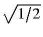
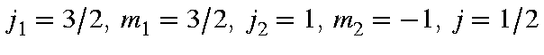
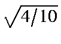
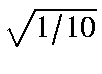
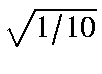
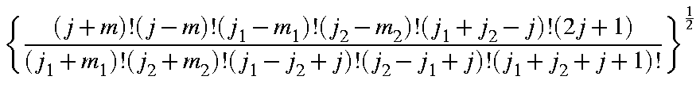
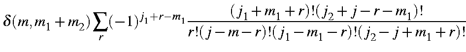

For 5 electrons in 5 M.O.s there are 252 microstates ( 10!/(5!5!)), but as states of different spin do not mix, we can use a smaller number. If doublet states are needed, then 100 states ( 5!/(2!3!)(5!/3!2!) are needed. If only quartet states are of interest, then 25 states ( 5!/(1!4!)(5!/4!1!) are needed and if the sextet state is required, then only one state is calculated.
In the microstates listed, state 1 is the ground-state configuration. This can be written as (2,2,1,0,0), meaning that M.O.s 1 and 2 are doubly occupied, M.O. 3 is singly occupied by an alpha electron, and M.O.s 4 and 5 are empty. Microstate 1 has a component of spin of 1/2, and is a pure doublet. By Kramer's degeneracy--sometimes called time-inversion symmetry--microstate 2 is also a doublet, and has a spin of 1/2 and a component of spin of -1/2.
Microstate 3, while it has a component of spin of 1/2, is not a doublet, but is in fact a component of a doublet, a quartet and a sextet. The coefficients of these states can be calculated from Wigner's symbol, also called the Clebsch-Gordan 3-J symbol . Thus, the coefficient in the doublet is (
), in the quartet is (
 ), and in the sextet, ( ).
), and in the sextet, ( ).
Microstate 4 is a pure sextet. If all 100 microstates of component of spin = 1/2 were used in a C.I., one of the resulting states would have the same energy as the state resulting from microstate 4.
Microstate 5 is an excited doublet, and microstate 6 is an excited state of the system, but not a pure spin-state.
By default, if n M.O.s are included in the MECI, then all possible microstates which give rise to a component of spin = 0 for even electron systems, or 1/2 for odd electron systems, will be used.
Table 1:
Sets of Microstates for Various MECI Calculations|
|
Odd Electron Systems |
|
Even Electron Systems |
|
||
|
|
Alpha Beta |
|
No. of |
Alpha Beta |
|
No. of |
|
C.I.=1 |
(1,1)x(0,1) |
= |
1 |
(1,1)x(1,1) |
= |
1 |
|
2 |
(1,2)x(0,2) |
= |
2 |
(1,2)x(1,2) |
= |
4 |
|
3 |
(2,3)x(1,3) |
= |
9 |
(2,3)x(2,3) |
= |
9 |
|
4 |
(2,4)x(1,4) |
= |
24 |
(2,4)x(2,4) |
= |
36 |
|
5 |
(3,5)x(2,5) |
= |
100 |
(3,5)x(3,5) |
= |
100 |
(n,m) means n electrons in m M.O.s.
MOPAC is configured to allow a maximum of MAXCI states (currently: 20,000), where MAXCI is defined in the file meci_C.F90. If more states are needed (see Table 1), then MAXCI in meci_C.F90 should be modified. Of course, if MAXCI is changed, MOPAC should be recompiled.
If CIS, CISD, or CISDT are specified, then the number of microstates is defined by C.I.=k and the keyword. The number of microstates is a function of k. Let n and m be integers, such that:
If k is odd, then round down to the next lower integer. Then the number of microstates nCIS, nCISD, and nCISDT, for even-electron systems is:
Note that when CIS is used, the ground state is not included in the list of microstates. Values for the more important k are given in Table 2.
|
<j1j2m1m2|j1j2jm> |
= |
 |
|
|
|
 |